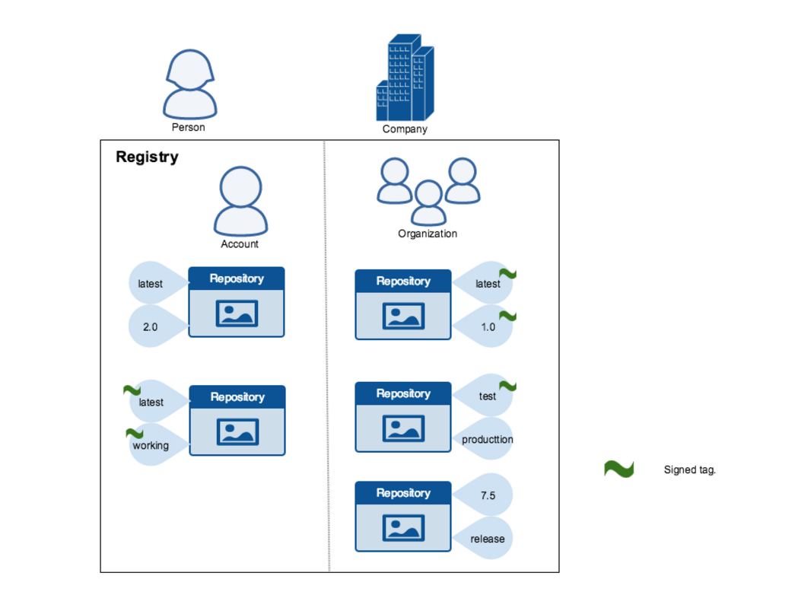
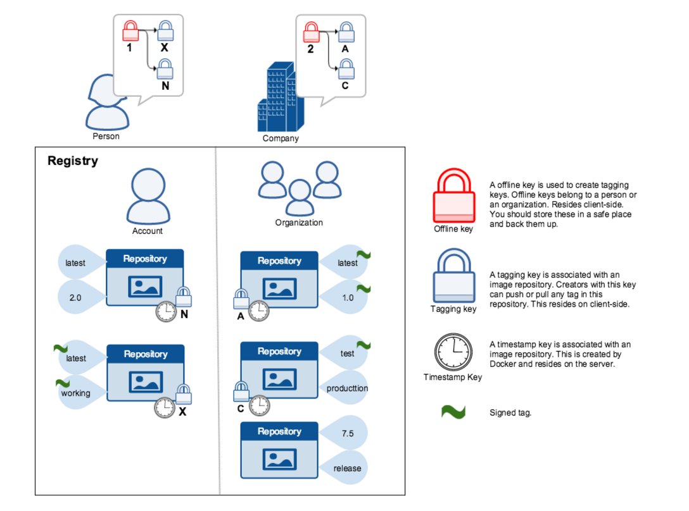

Mini-lecture:
Mini-lecture:
Content Trust
Content Trust
- Docker Content Trust allows us to ensure the integrity and publisher of Docker images
- Client side signing and verification of image tags can be enforced
- Image publishers sign their images
- Image consumers can ensure their images are signed
- Integrates The Update Framework (TUF) into Docker using Notary
How content trust works for publishers
- Content trust is associated with the tag of an image
- Trust for an image tag is managed through the use of signing keys
- Four different keys are used
- Root key
- Target key
- Snapshot key
- Timestamp key
- When pushing images to a repository the image is signed with the tagging key
- Different repositories can use the same root key
Signed and unsigned tags
Signed and unsigned tags (cont'd)
- When content trust is enabled, publishers can choose to sign or not to sign an image tag
- The same tag can be both signed and unsigned
- Content of a signed and unsigned tag with the same name may not be the same. For example:
myimage:1.0`signed and`myimage:1.0`unsigned can have different content despite sharing the same repository name and tag- Can iterate over unsigned images before signing them for release
How content trust works for image consumers
- If content trust is enabled, only signed images can be used to run containers
- Only signed image tags are visible. Tags that are unsigned do not appear
- If content trust is not enabled, both signed and unsigned tags can be used
Content trust Keys
Notary
- A utility tool for securely publishing and verifying content
- Uses a client / server approach for running and interacting with trusted collections
- Notary is integrated into the Docker Engine for the purpose of providing content trust on Docker images.
Content trust in DTR
- DTR comes with a built in Notary server
- Notary server must be configured to store signed metadata about trusted images
- Users can interact with the Notary server by using the Notary CLI